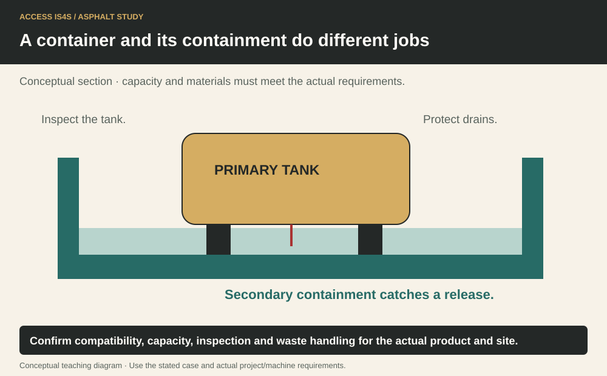
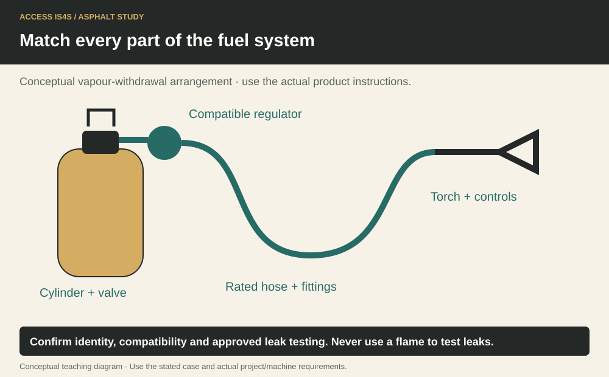

Study chapter · Outline D2
Use of storage areas
Storage keeps the right material identifiable and available while controlling release, incompatibility and exposure. A storage plan includes the container/tank, surrounding area, access, inspection, emergency response and destination for waste. A tidy-looking tank is not proof that its containment or product identity is adequate.
Learning step 1
Type 1 storage
For this lesson, Type 1 describes a primary storage container with a separate spill-containment arrangement, such as a tank within a designed containment area. It is a course grouping, not a universal legal classification. Fuels, primers, emulsions such as an identified SS-1 product, asphalt binder and waste streams require their actual SDS, compatibility, heating/handling and regulatory arrangements.
Identify the product and hazards before deciding which area is suitable. Natural gas service has its own engineered supply and safety requirements; it is not handled as an ordinary open liquid tank. Containment must remain effective, including when rainwater or other material occupies space. Drainage and disposal of collected liquid follow the approved procedure; opening a drain to clear capacity can release contamination.
A container and its containment do different jobs

Learning step 2
Type 2 storage
Type 2 here describes a self-contained storage arrangement, such as equipment with integral secondary containment, where its design provides that function. The word self-contained does not mean leak-proof, maintenance-free or automatically suitable for every fuel or liquid asphalt product. Verify the actual design, product compatibility, capacity, inspection and permitted location.
A biodiesel blend can have different handling/storage considerations from another fuel. A heated binder storage system introduces thermal and other hazards. Labels, isolation, overfill prevention, transfer connections and emergency access must match the actual installation. Read the tank/assembly instructions and product records together.
Learning step 3
Use of recycled materials in hot mix asphalt
Using RAP in hot mix can reduce demand for some new material and may offer cost benefits, but the outcome depends on processing, transport, consistency, binder contribution and required performance. Mobile recycling changes where processing occurs and may change traffic, emissions and material-control arrangements. Identify what is being recycled and into which approved product; do not treat every recovered pile as acceptable feed.
Keep recovered material segregated by the required source/type and protect it from unacceptable contamination. The quality record follows it through processing and blending. A low purchase price alone is not the cost of a compliant finished mixture.
Learning step 4
Use of recycled materials in asphalt plant burners
A plant burner must use only fuel permitted by its design and applicable environmental authorization. Recovered fuel or other recycled material is not automatically acceptable because it burns. Composition, contamination, handling, burner suitability, combustion control and emissions requirements matter. Heating temperature is established by the approved process and equipment, not by a generic classroom number.
Storage/transfer for a permitted recovered fuel needs the actual SDS and emergency arrangements. A change in fuel can affect burner performance and emissions and must be controlled through the authorized process. Do not conduct a classroom trial with an unidentified waste fuel.
Match every part of the fuel system

Try it and explain your thinking
Draw the difference between separate containment and an integral self-contained arrangement
Draw the difference between separate containment and an integral self-contained arrangement. Identify five checks both still require.
Skills you use: Reading, Communication.
Calculate and check the result
Fictional cost exercise: virgin material supply costs $8,000; recovered feed costs $5,000 plus $2,400 processing and $900 extra transport. Compare only these stated costs.
Skills you use: Numeracy, Writing, Problem solving.
Create a digital storage inspection record and peer-test it with the open-drain case
Create a digital storage inspection record and peer-test it with the open-drain case. Revise it to distinguish observation, action, responsible person and verified closure.
Skills you use: Digital, Collaboration, Adaptability, Creativity and innovation.
Show the skill in supervised practice
Machine/model/serial or classroom case: __________ · Manual/procedure and revision: __________ · Date/location: __________ · Learner/observer: __________
Record each criterion as 0—not yet demonstrated, 1—with task-solving support, or 2—independently under the stated conditions. Mark unobserved criteria separately; do not convert missing opportunity into a zero. The assessor determines the required repeat practice and applicable qualification requirements. A critical failure means hold, correction and reassessment regardless of the numerical result. Use safe simulations for classroom reasoning; actual operation requires the selected equipment, approved conditions and competent supervision.
| What the observer checks | Result | Evidence |
|---|---|---|
| Critical: Safe access, surroundings and communication maintained. | Pass / hold | Observation: __________________ |
| Critical: Required energy, heat, movement and public-access controls maintained for the actual task. | Pass / hold | Observation: __________________ |
| Use the actual installation, SDS, transfer plan and permitted observation area. | 0 / 1 / 2 | Evidence/help: ________________ |
| Assess product identification, containment/compatibility questions and reporting of a defect. | 0 / 1 / 2 | Evidence/help: ________________ |
| Live fuel/binder transfer and burner changes require separate authorized instruction and controls. | 0 / 1 / 2 | Evidence/help: ________________ |
Actual conditions and support: __________________________
Feedback, next practice and authorized release/status: __________________________
Sources and further reading
- SkilledTradesBC. (2016). Asphalt Paving/Laydown Technician program outline, D2, printed p. 42; source PDF pp. 44–44.
- Asphalt Institute. (2007). The asphalt handbook (7th ed., MS-4), Chapter 7: Manufacture of Hot Mix Asphalt; source PDF pp. 341–390. Open publication.
- WorkSafeBC. (Web snapshot: October 30, 2026). OHS Regulation, Part 5: Chemical and Biological Substances. Open publication.
- Province of British Columbia. (Web snapshot: October 30, 2026). Report a Spill. Open publication.
- Canadian Centre for Occupational Health and Safety. (retrieved October 30, 2026). Chemical Profiles: Propane. Open publication.
Figure-specific pages, editions and original contributors are credited beside each image. Current project requirements and the matching machine instructions determine practical use.